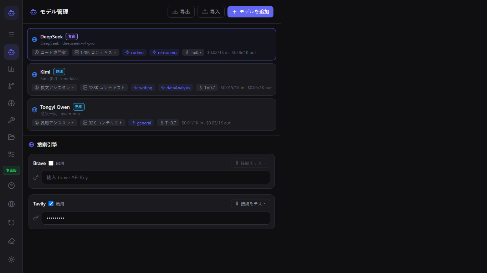
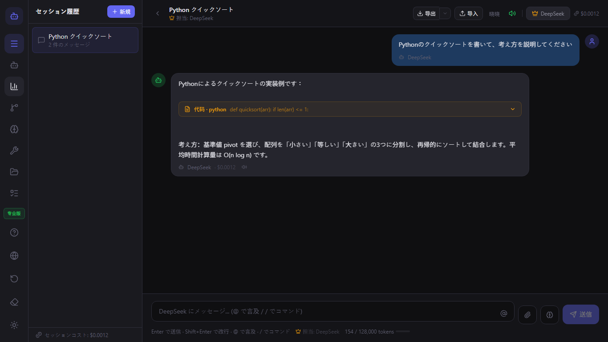
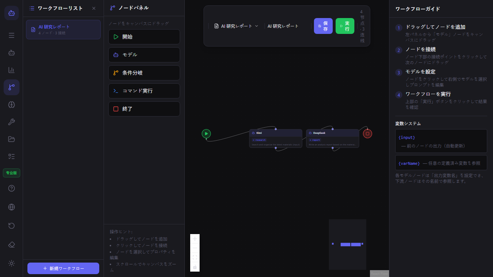
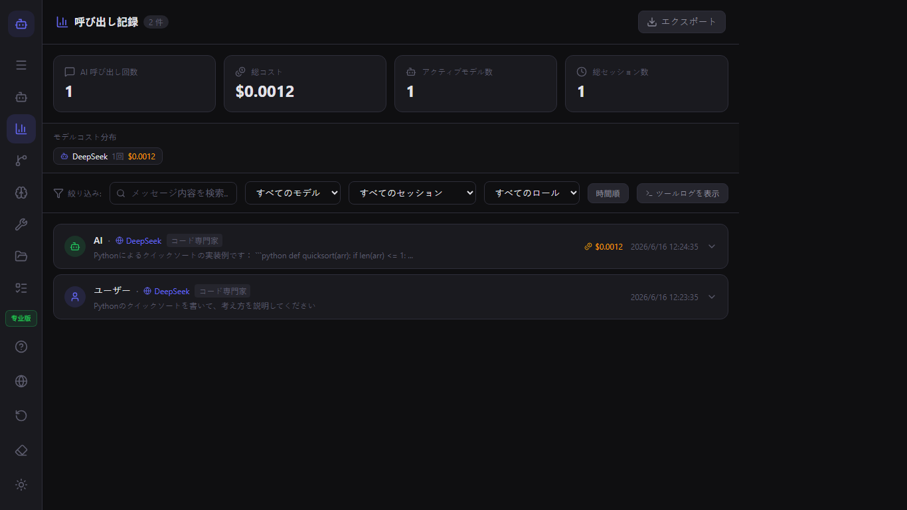

ModelFlow ユーザーガイド
ModelFlowへようこそ。このガイドでは、初回起動から高度なマルチモデルワークフローまで、すべてを網羅しています。
クイックスタート
- Microsoft StoreからModelFlowをダウンロードします。
- アプリを開き、オンボーディングを完了します。
- モデルマネージャーで最初のモデルを追加します。
- チャットを開始し、
@model-nameと入力してモデルを切り替えます。
モデル管理
モデルマネージャーを使用して、テキスト、画像、動画、音声の各モデルを追加できます。各モデルについて、プロバイダー、APIキー、ロール、コンテキストウィンドウ、コスト上限を設定できます。

チャットと@メンション
@の後にモデル名を入力すると、次の返信をそのモデルにルーティングできます。同じ会話内で複数のモデルを連携させることができます。

ワークフロー
ワークフローエディターを開いて、ビジュアルパイプラインを構築します。モデルノード、条件ノード、コマンドノードをキャンバスにドラッグして接続します。

プラグイン
ModelFlowは、検証済みプラグインとコミュニティプラグインをサポートしています。プラグインマネージャーからインストールするか、独自のプラグインを作成できます。

ローカルCLIとツール
モデルはローカルコマンドの実行、ファイルの読み取り、ディレクトリの一覧表示ができます。チャットで/toolと入力するか、ワークフローにコマンドノードを追加します。

コールログとコスト
コールログは、すべてのAIコール、ツール実行、トークン使用量、推定コストを追跡します。ログをエクスポートして分析できます。

設定とプライバシー
ModelFlowはローカルファーストです。セッション、モデル設定、プラグインはすべてお使いのマシンに保存されます。設定で言語、ワークスペース、データのエクスポートを変更できます。